These consist of two Triangles, whose center-most dancers are working with the furthest outside dancers in a Triangle.
Examples of Interlocked Triangles:
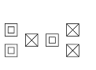 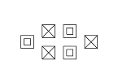 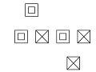
Caution: Callers are cautioned that Interlocked Triangles were added to C-2 in 2010 and they have never received much use even at C-3 or C-4. While the entire “family” was added and defined, some of its members (e.g., Outside Interlocked Triangles) are very difficult to see and don’t necessarily dance well. Caller judgment needs to be exercised.
Inpoint/Inside/Outpoint/Outside Interlocked Triangles
Various formations, including Twin Diamonds and Point-to-Point Diamonds, contain Interlocked
Triangles.
Inside Interlocked Triangles
The Center 6 form the Triangles.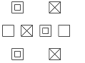 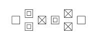 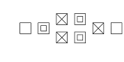
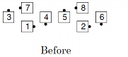 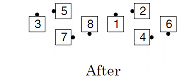
Outside Interlocked Triangles
The Outside 6 form the Triangles.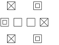 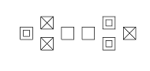
Note: These triangles may be easier for the dancers to identify with the phrase “Ignore the center 2, Interlocked Triangle …”.
Inpoint Interlocked Triangles
Each point facing in is an apex.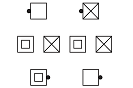 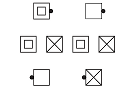
Outpoint Interlocked Triangles
Each point facing out is an apex.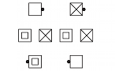 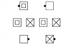
© Copyright 1983, 1986-1988, 1995-2011 Bill Davis, John Sybalsky and CALLERLAB Inc., The International Association of Square Dance Callers. Permission to reprint, republish, and create derivative works without royalty is hereby granted, provided this notice appears. Publication on the Internet of derivative works without royalty is hereby granted provided this notice appears. Permission to quote parts or all of this document without royalty is hereby granted, provided this notice is included. Information contained herein shall not be changed nor revised in any derivation or publication.